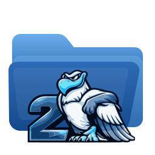

Manual de Rox-Filer2
Gestor de archivos rápido y liviano para X11 y Wayland, continuación de ROX-Filer. — 2.12.2-89
Qué es Rox-Filer2
Rox-Filer2 es la continuación de ROX-Filer, puesta al día en GTK3 y ampliada con una interfaz moderna, soporte SMB nativo, iconos de unidades y un modo escritorio que funciona tanto en X11 como en Wayland.
Hace una sola cosa en un solo proceso: gestiona archivos y, si usted quiere, el escritorio. No hay demonio, ni capa de sistema de archivos virtual, ni dependencia de un entorno de escritorio. Todo lo que ve son rutas POSIX corrientes.
Interfaces Clásica y Moderna
Rox-Filer2 incluye dos aspectos de interfaz que comparten los mismos motores de archivos, MIME, montaje, Papelera y Escritorio.
- Clásica ROX conserva la disposición y la barra de herramientas tradicionales de ROX-Filer. Si viene de ROX-Filer, nada cambió de lugar.
- Moderna agrega barra de menús, fila de navegación, pestañas y una barra lateral con Lugares, Dispositivos y Red.
Elija el estilo permanente en Opciones > Interfaz. El cambio se aplica a las ventanas que abra después de reiniciar Rox-Filer2.
Para probar un estilo una sola vez sin tocar la preferencia guardada, ejecute rox --classic o rox --modern.
La ventana del gestor
Abra directorios con doble clic. Un clic simple selecciona; arrastre con el botón izquierdo sobre espacio vacío para seleccionar con goma elástica.
- El botón derecho abre el menú contextual del elemento bajo el puntero, o el de la ventana entera si está sobre espacio vacío.
- El botón central abre un directorio en una ventana nueva.
- Retroceso sube un nivel; Ctrl+L enfoca la entrada de ruta.
- En Moderna, Ctrl+T abre una pestaña y Ctrl+W la cierra. Cada pestaña mantiene su propia ruta e historial.
Cambie entre la vista de iconos y la vista detallada con el selector de vista, y ajuste el tamaño de los iconos con el deslizador.
Escritorio ROX
Inicie el escritorio con rox --desktop. Solo corre una instancia a la vez. Dibuja el fondo de pantalla, muestra los iconos de su directorio de escritorio y puede mostrar iconos de unidades.
- Fondo de pantalla:
rox --desktop-wallpaper, o clic derecho en el escritorio. Los modos son llenar, ajustar, estirar, centrar y mosaico. - Aplicaciones:
rox --desktop-appsgestiona los lanzadores del escritorio. - Iconos de unidades:
rox --desktop-drive-icon-layoutlos ordena. - Preferencias:
rox --desktop-preferences.
En X11 el escritorio usa una ventana normal con sugerencia de tipo escritorio. En Wayland usa la capa de fondo de Layer Shell, que requiere gtk-layer-shell instalado y un compositor que publique zwlr_layer_shell_v1, como Labwc. Fuerce un backend con rox-x11 --desktop o rox-wayland --desktop.
Para fijar además el fondo de la ventana raíz de X11, de modo que las terminales con transparencia falsa y conky vean la misma imagen, instale feh o xwallpaper.
Unidades y montaje
Las unidades locales y extraíbles aparecen en la barra lateral de Moderna bajo Dispositivos, y opcionalmente como iconos en el escritorio. Haga clic en una unidad para montarla y abrirla; use el menú contextual para desmontarla.
La información de unidades proviene de lsblk, de /proc/mounts y de sysfs, así que no hace falta ningún servicio en segundo plano. Montar una unidad como usuario normal requiere udisksctl o una entrada en fstab que lo permita.
Desmonte siempre los medios extraíbles antes de desconectarlos. Rox-Filer2 no escribe en un dispositivo después de que usted cierra su ventana, pero el núcleo puede conservar datos sin volcar.
Imágenes de disco (ISO, IMG, SFS, SquashFS)
Haga clic derecho sobre un archivo de imagen y elija Montar imagen. Rox-Filer2 la asocia a un dispositivo de bucle y la monta en solo lectura, y luego abre el resultado como cualquier otro directorio. Las extensiones admitidas son .iso, .img, .sfs, .squashfs, .sqfs y .sqsh.
Una vez montada, el mismo menú ofrece Abrir imagen montada y Desmontar imagen. Los montajes viven bajo /media/rox-filer2-images/, un directorio por imagen.
- Siempre en solo lectura. El dispositivo de bucle, el dispositivo de bloque y el montaje se configuran los tres en solo lectura, de modo que una imagen nunca puede modificarse por accidente.
- Como root (el modelo habitual de Puppy y Essora) usa
losetupymountdirectamente. Como usuario normal usaudisksctl, que debe estar instalado. - Los
.imgcrudos pueden contener una tabla de particiones. Cuando se encuentra más de una, Rox-Filer2 pregunta cuál montar y muestra el número real de cada partición, su sistema de archivos, su tamaño y su etiqueta. Las imágenes ISO y SquashFS se montan siempre enteras, incluso cuando una ISO híbrida expone una tabla de particiones. - Sin GVfs. La imagen se convierte en un montaje local corriente, así que copiar, arrastrar y soltar, los tipos MIME y las acciones personalizadas se comportan igual que en cualquier otro directorio.
El montaje ocurre en segundo plano: aparece una ventana pequeña con un indicador giratorio mientras se prepara el dispositivo de bucle y se exploran las particiones, y el gestor sigue respondiendo.
Desmonte antes de borrar o mover el archivo de imagen. Si un montaje desaparece a espaldas de Rox-Filer2, las entradas del menú vuelven a ofrecer Montar imagen.
SMB y recursos compartidos de Windows
Abra Ir > Conectar a recurso SMB, o Explorar la red en la barra lateral de Moderna. Escriba el servidor y, si lo conoce, el recurso; el botón de listado le pregunta al servidor qué recursos ofrece.
Rox-Filer2 monta el recurso como un montaje local corriente mediante mount.cifs, en lugar de presentarlo a través de un sistema de archivos virtual. Por eso copiar, arrastrar y soltar, los tipos MIME, la Papelera y las acciones personalizadas funcionan exactamente igual que con archivos locales.
- Debe estar instalado
cifs-utils. - Montar requiere root. Como usuario normal, Rox-Filer2 intenta
sudo -n; una regla sin contraseña paramount.cifsequivale a conceder root, así que otórguela a conciencia o haga el montaje usted mismo. - Su contraseña nunca se escribe en la configuración. Se pasa por un archivo temporal de credenciales legible solo por usted, que se borra en cuanto
mount.cifstermina. Solo se recuerdan el servidor, el recurso, el usuario y el dominio.
Papelera
Borrar desde el menú mueve los elementos a la Papelera XDG, de modo que se pueden restaurar. Restaure desde el menú contextual del directorio de la Papelera.
La Papelera solo funciona dentro del mismo sistema de archivos que el directorio de papelera. Borrar un archivo en otra partición o en un dispositivo extraíble puede ser irreversible, y Rox-Filer2 se lo avisa cuando ocurre.
Tipos de archivo y Abrir con
Los tipos de archivo provienen de la base de datos MIME compartida, más cualquier atributo extendido puesto en el archivo mismo. El menú contextual lista las aplicaciones registradas para ese tipo en Abrir con.
Fije un manejador permanente, o un icono propio, desde las entradas Establecer icono y Establecer acción del elemento. Se guardan en su propia configuración y nunca modifican la base de datos del sistema.
Acciones personalizadas y plantillas
Las acciones personalizadas agregan sus propios comandos al menú contextual, recibiendo las rutas seleccionadas como argumentos. Son entradas de escritorio corrientes, así que puede copiar una entre máquinas.
Las plantillas permiten crear un archivo nuevo vacío de un tipo dado desde el menú contextual. Agregue las suyas colocando un archivo en el directorio Templates del directorio de la aplicación.
Búsqueda, marcadores y ventanas emparejadas
- Búsqueda:
rox-findbusca por nombre, tamaño, tipo y contenido, y devuelve los resultados al gestor. - Marcadores: mantienen a un clic los directorios de uso frecuente; en Moderna también aparecen en Lugares.
- Ventanas emparejadas:
rox --pairabre dos ventanas lado a lado para copiar entre directorios, yrox --pair-realignlas vuelve a alinear.
Opciones y archivos de configuración
Abra Opciones desde el menú Editar, desde el menú del escritorio o con rox --config-rox.
Sus ajustes viven bajo el directorio de configuración XDG, normalmente ~/.config/rox.sourceforge.net/ROX-Filer/. Los archivos son XML, INI y texto plano, así que puede respaldarlos, editarlos o copiarlos entre máquinas. Borrar un archivo restaura ese grupo de valores predeterminados.
Línea de comandos
rox— elige automáticamente el backend X11 o Wayland.rox-x11,rox-wayland— fuerzan un backend.rox DIR— abre un directorio.rox -d DIR— lo abre como directorio aunque sea un directorio de aplicación.rox -D DIR— cierra ese directorio y sus subdirectorios.rox --classic,rox --modern— anulación temporal de la interfaz.rox --desktop— inicia el escritorio;--desktop-refreshrefresca el que ya corre.rox --help— la lista completa.
Diagnóstico
El registro está apagado por omisión. Inicie con rox --debug para escribir un registro técnico, --log-file=ARCHIVO para elegir dónde, y --log-level=NIVEL con error, warning, info, debug o trace. rox --clear-logs borra los registros que Rox-Filer2 gestiona automáticamente.
Adjunte ese registro al informar un problema. Anota qué backend de escritorio se seleccionó, qué estilo de interfaz está activo y por qué falló un montaje SMB o un escaneo de unidades.
Informar problemas
Informe errores y sugerencias en la página del proyecto, github.com/josejp2424/ROX-Filer-gtk3.
Indique qué versión usa (vea Ayuda > Acerca de Rox-Filer2), si usa X11 o Wayland, qué estilo de interfaz y los pasos exactos que reproducen el problema.